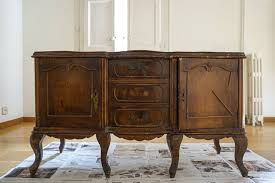
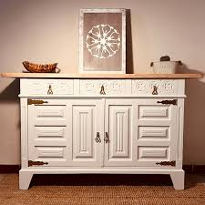
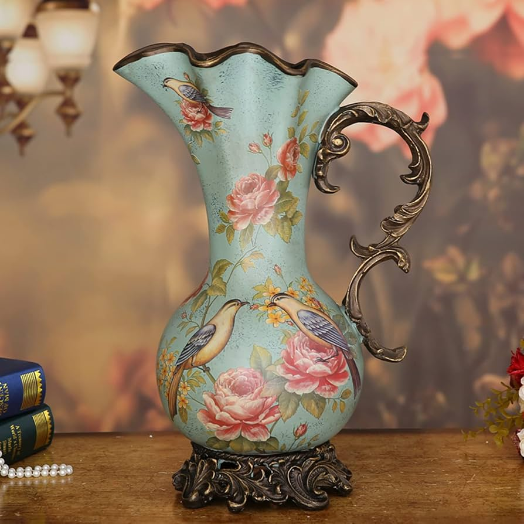
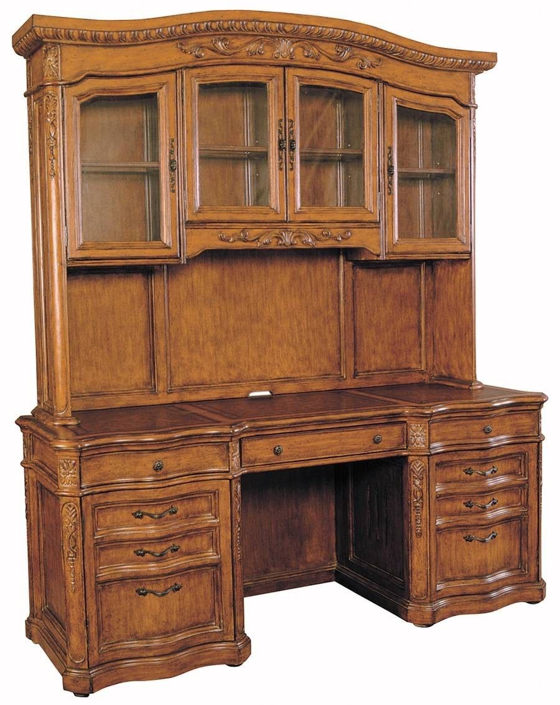
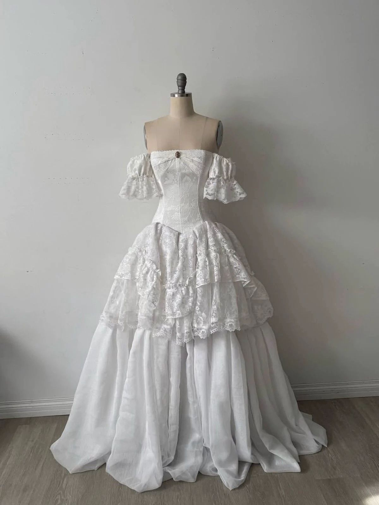
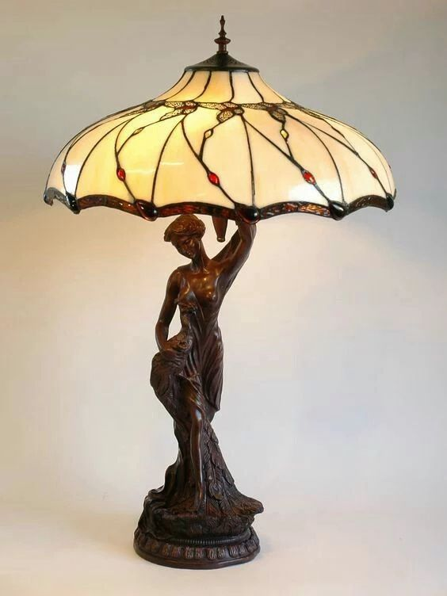
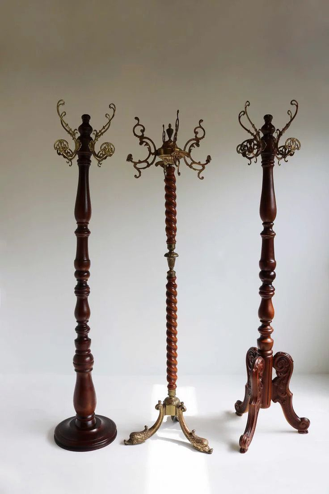

Bazarcito es una empresa 100% xalapeña, dedicada a la venta de artículos curados a través del storytelling, buscando cumplir con el propósito de darle una segunda vida a las cosas que alguna vez fueron importantes para alguien. Está conformada por una comunidad que comparte una misma idea sobre el consumo responsable y la sostenibilidad. Nuestra mayor meta es fomentar la cultura de reciclaje y llegar a posicionar nuestra marca como la mayor referente de storytelling en la región.

"Con amor e historia."


Trascender el concepto tradicional de comercio de segunda mano, actuando como curadores de memoria y guardianes de historias. Nos dedicamos a rescatar, preservar y comercializar antigüedades y prendas vintage, otorgándoles un nuevo ciclo de vida a través de la narrativa emocional. Buscamos conectar a nuestros clientes con la esencia de cada objeto, promoviendo un consumo consciente, ético y sostenible que valore el legado del pasado como una pieza fundamental del presente.
Consolidarnos como el referente principal de comercio narrativo en la región, expandiendo nuestro modelo de negocio hacia una plataforma híbrida (física y digital) que sea reconocida por su excelencia en la curaduría histórica. Aspiramos a ser un motor de cambio en la industria del retail, demostrando que la rentabilidad puede coexistir con la preservación cultural y la sostenibilidad, inspirando a una comunidad global a encontrar valor en las historias que nos precedieron.
Una selección increíble de objetos que cuentan una historia. Cada pieza es única.

Muebles
Ropa
Objetos
Muebles